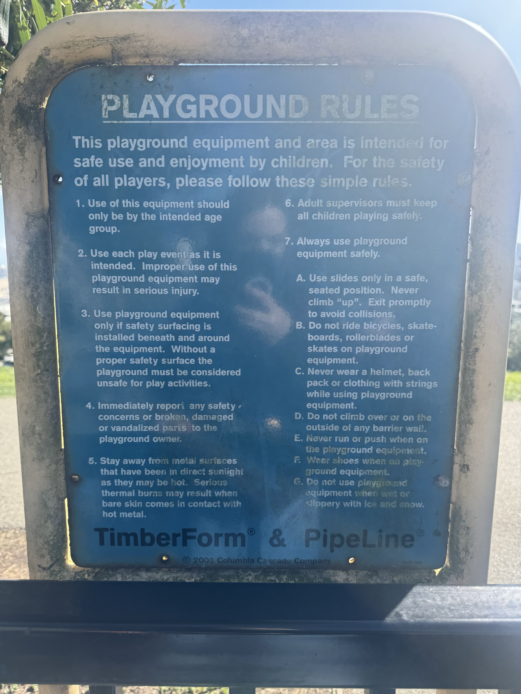
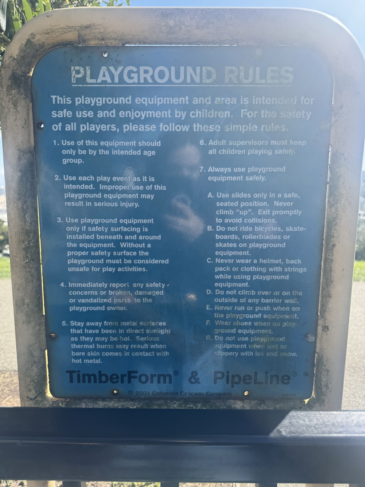
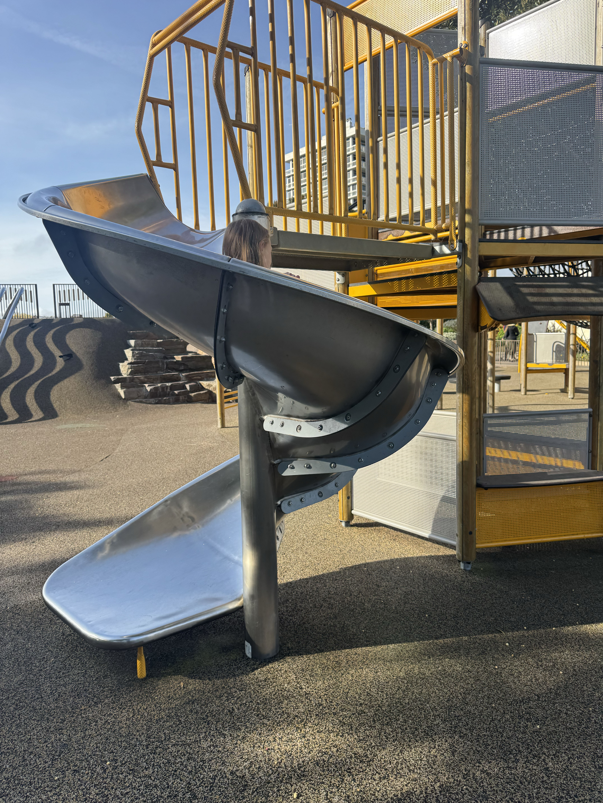
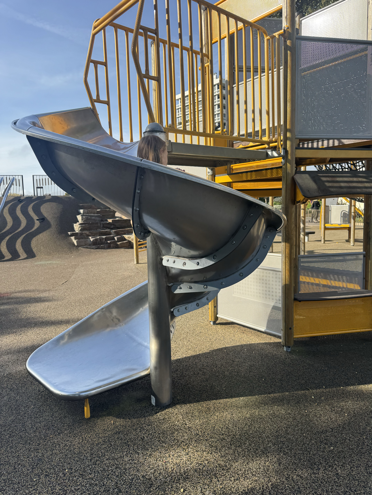
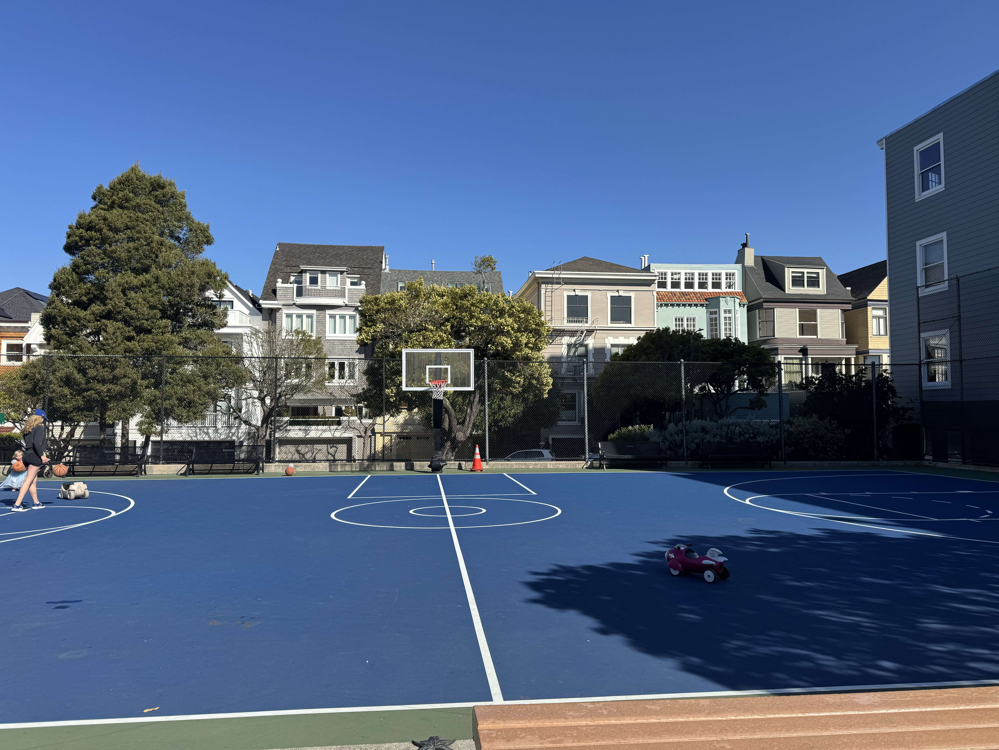
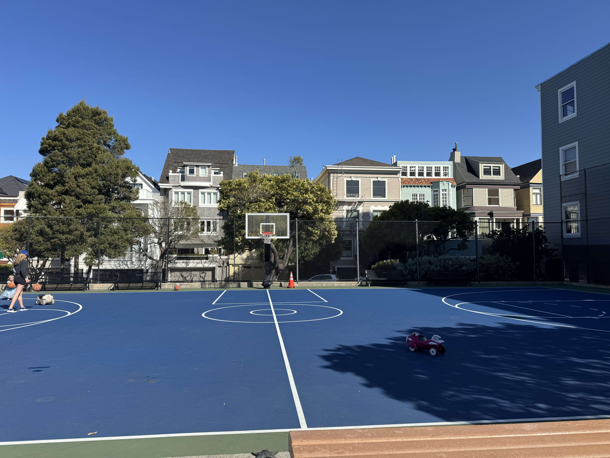

Alta Plaza park is a beautiful urban park with stunning views of San Francisco. It features playgrounds, open green spaces great for picnics, and lots of shaded spaces. The park is quite sizable and has plenty of playground equipment to keep a child occupied for a couple of hours. Parents can enjoy watching their kids from the ample shaded seating throughout the park with gorgeous views of San Francisco due to the park being atop a beautiful hill. Surrounding the park is a vast gorgeous lawn that is great for picnics! Alta plaza has playground equipment for both little kids and big kids so this is a great park to go to for kids anywhere from the age of 1 to 10. There is little obstruction from view due to the layout of the park so if you have multiple kids with you, you are able to watch them all with peace of mind. There are also a few tables to enjoy a nice afternoon snack with the child(ren) they bring to the park. There is a b=athroom building outside of the gated playground so you wont need to leave the playground to find a bathroom when a bathroom break is neessary. The bathroom building is fully stocked for all bathroom needs. However. it is worth noting that this bathroom was probably the least clean of the three parks reviewed. The playground space had a few pot holes which are potential tripping hazards. The equipment is wonderful but there are some dangerous attributes such as the toad stool equipment intersecting with the see-saw. This could be very dangerous if a child were to trip and hit there head on the metal see-saw. I had to take two laps around the park to find parking and walk up a large amount of stairs to get to the park. I would give this park a 8/10

Alta Plaza
Alta Plaza Park, Jackson St. &, Steiner St, San Francisco, CA 94115
Presidio Heights Park
3437 Clay St, San Francisco, CA 94118
Welcome to Playground review where you can get reviews on playgrounds in the Pac-Heights neighborhood. We frequent the playgrounds in the Pacific Heights neighborhood do the proximity to the schools my daughter and I attend. Playgrounds are incredibly important to us because it’s our time to step away from technology and the stresses of school and work, and enter into the world of play. Here you will get an honest review from myself, a mother, and my 8 year old daughter Camila. Camila and I fancy ourselves playground connoisseurs. We wander and search for the coolest playgrounds we can find with the best attributes. These playground adventures happen ATLEAST once a week if not more! It’s important to know that not all playgrounds are created equal. We look for places that can keep us entertained for hours and that give us the maximum amount of fun. To accomplish this, we look for certain criteria in our playgrounds. We hope to give the most comprehensive reviews possible about each of the playgrounds and hope that we can take you along on this journey of fun At the playgrounds of Pac Heights.
Some things we review
Parking
- How is the parking situation near the playgrounds?
- is it easy to find parking? really hard?
Safety
- Is the equipment safe?
- What are some risk factors associated with each of the playgrounds?
- Are there gates around the playground?
Age demographic
- who is this playground for?
- little kids?
- big kids? both?
Bathrooms
- Are they clean and safe?
- Are they well stocked?
Fun!
- will the child you bring have fun for a few hours?
- will they get bored and want to leave shortly after arriving?
Additional attributes
- Seating
- Shade
- View?

 



Alta Plaza
Pros
- Great view/li>
- Lot's of play equipment
- Shaded seating
- Picnic area
- tables inside the park
Cons
- Limited parking
- Gross bathroom
- Tripping hazzzards
- Playground is directly in the sun
- mildly dangerous equipment


 

Lafayette Park
Lafayette park is my daughters favorite park that she always chooses to go to for play dates. It has a play space for both young kids and big kids to play in. There is ample seating for parents and gaurdians throughout the park however there isn't very many shaded spaces. The play structures at this park are arguably the most fun inducing. This park has seperate spaces for slides, jungle gims, playtunnels and swings in addition to the space for the little kids. This is the opportune place for an epic game of hide and seek or tag. There were more slide/ types of slides at Lafayette park than any other park. My daughter is always bummed out when we have to leave here and immediately asks me when we can come again. We could easily spend hours here and still fill like there is more fun to be had. There are some spaces for concern for safety for younger children if they were to wander over to the spaces intended for older children. Epecially the rock stairs leading up to the playmound with the slides. The bathrooms here are well stocked and clean as well!. during this visit, I found parking almost immediately, however it's worth noting that was more luck than anything else. Typically I have to fully circle the park ATLEAST once to find parking. There is tons of green space around the park for picnics and general frolicking. This park is a 9.5/10
Pros
- Tons of equipment
- Picnic areas
- Clean bathrooms
- equipemnen for all ages
- Tons of seating
- Good location
Cons
- Can get crowded
- Obstructed views
- Hazardous spaces
- lack of shade
 

Presidio Heights Park
Presidio Heights park is a hidden gem nestled into the Pac Heights neighborhood. This playground is the smallest of the three playgrounds with the least amount of equipment. There is a space for both older kids and younger kids to play. The space for the little kids gated off from the other spaces which i really liked because if your young child wanders over to the big kid area that’s a major potential risk to the safety and well-being of the child. The play spaces themselves were completely shaded from surrounding trees so you wont have to worry about potential sunburns or burnt limbs from heated up metal equipment. However, the seating for the parents is directly in the sun, so remember to reapply your sun screen often! In addition to the playground there is also a basketball court for older kids and adults to play. There are a handfull of well sized tables sat between the basketball court and the playground. This would be a good place for a snack, however be conscious of the sun and how it might effect your kid(s). Due to there not being very much playground equipment a child could end up getting bored relatively fast. This would be a great park to stop in for a quick play on a weekend or after school. The bathrooms were clean and well equipped but relatively small. I had to take a lap around the block to find parking and walk through the residential area to get to the playground. All over we enjoyed it and I would give this park a 7/10
Pros
- Quiet neighborhood
- Seperate spaces for older/ younger kids
- Shaded playground
- Lots tables and chairs
- Basketball court
- Tranquil space
Cons
- Small size/ very little equipment
- Seating spaces directly in the sun
- Finding parking on weekdays is hard